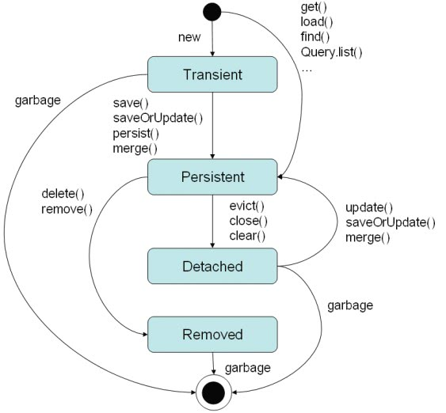

Hibernate中的實體物件可以分為四種狀態：Transient、 Persistent、Detached、Removed。
- Transient
當您直接使用new創建出物件，例如在之前的例子中，
User類別所衍生出之物件，在還沒有使用save()之前都是Transient物件，這些物件還沒有與資料庫發生任何的關係，不對應於資料庫中的任一筆資料。
- Persistent
當物件與資料庫中的資料有對應關係，並且與Session
實例有關聯而Session
實例尚未關閉（close），則它是在Persistent狀態，具體而言，如果您將Transient狀態的物件使用Session的save()方法
加以儲存，或是使用Hibernate從資料庫載入資料並封裝為物件（例如使用get()、load()等查詢物件的相關方法），則該物件為Persistent狀態。
Persistent狀態的物件對應於資料庫中的一筆資料，物件的id值與資料的主鍵值相同，並且Session實例尚未失效，在這期間您對物件的任何狀 態變動，在Session實例關閉（close）或Transaction實例執行commit()之後，資料庫中對應的資料也會跟著更新。
如果您將Session實例關閉（close），則Persistent狀態的物件會成為Detached狀態。
如果您使用Session的實例delete()方法刪除資料，Persistent狀態的物件由於失去了對應的資料，則它會成為Transient狀 態。
Persistent狀態的物件對應於資料庫中的一筆資料，物件的id值與資料的主鍵值相同，並且Session實例尚未失效，在這期間您對物件的任何狀 態變動，在Session實例關閉（close）或Transaction實例執行commit()之後，資料庫中對應的資料也會跟著更新。
如果您將Session實例關閉（close），則Persistent狀態的物件會成為Detached狀態。
如果您使用Session的實例delete()方法刪除資料，Persistent狀態的物件由於失去了對應的資料，則它會成為Transient狀 態。
- Detached
Detached狀態的物件，其id與資料庫的主鍵值對
應，但脫離Session實例
的管理，例如在使用load()方法查詢到資料並封裝為物件之後，將Session實例關閉，則物件由Persistent狀態變為Detached狀
態，Detached狀態的物件之任何屬性變動，不會對資料庫中的資料造成任何的影響。
Detached狀態的物件可以使用update()方法使之與資料庫中的對應資料再度發生關聯，此時Detached狀態的物件會變為 Persistent狀態。
Detached物件，若不再被任何名稱參考，則在適當的時候將被垃圾收集所回收。
Detached狀態的物件可以使用update()方法使之與資料庫中的對應資料再度發生關聯，此時Detached狀態的物件會變為 Persistent狀態。
Detached物件，若不再被任何名稱參考，則在適當的時候將被垃圾收集所回收。
- Removed
如果您使用Session的實例delete()或remove()方法刪除資料，Persistent狀態的物件由於失去了對應的資料，則它會成為Removed狀
態，一個成為Removed狀態的物件不應該被繼續重用，您應該釋放任何參考至它的名稱，讓該物件在適當的時候被垃圾回收。
Transient與Detached狀態的物件是非管 理狀態，而Persistent狀態的物件是管 理狀態， 又稱為Persistent Object，其與一個Persistence Context 關聯。
在物件為Persistent時，如果物件的屬性發生變化，並且尚未提交之前，物件所攜帶的資料稱之為Dirty Data，Hibernate會在Persistence Context維護物件的最近讀取版本，並在資料提交時檢查兩個版本的屬性是否有變化，如果有的話，則將資料庫中的資料進行更 新。
